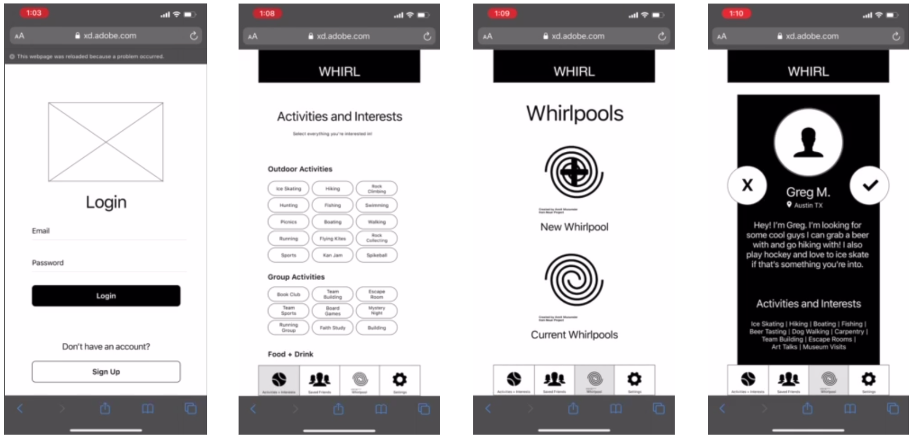

Table of Contents
-
map1. The Mission
-
fingerprint2. Key Artifacts
-
nature_people3. User Insights
-
important_devices4. Whirl's Value
-
gesture5. Usability
-
compare6. Fidelity Comparisons
-
beenhere7. Outcome
The Mission
For this particular project it started with brainstorming from each member's personal perspective. The mission? To design a mobile app that solves a real need in a person's day-to-day life.
In 3 weeks, our team needed to conduct user research, define the problem, ideate solutions, prototype the potential solution, and then test that solution with users and iterate based on user feedback.
What I Did
Conducted user interviews, wrote interview plans, created and analyzed user surveys, developed problem statement, utilized ideation methodology, feature prioritization, developed value proposition statement and canvas, sketched, prototyping, and wrote presentation script.
-
pie_chartThe Team
Annie Szarmach – UX Researcher & Designer
Carl Booker – UX Researcher & Designer
Chip Perkins – UX Researcher & Designer
Madison Smith – UX Researcher & Designer
What we made.
The Problem
People looking for companionship need a trustworthy way of meeting real people online, because it is hard to make sure that an online connection will grow into an in-person friendship.
UX Hypothesis
In today’s landscape of social media, dating apps, and cultural pressures, it can be challenging to find the time to meet authentic people that turn into genuine friends. Why can’t it be like when we were kids? When we could walk up to someone, ask if they would be our friend, and boom, we’re playing on the playground.
The Approach
First and foremost, we started by learing about our users. This was done by conducting six user interviews and sending out a survey about how people make new friends.
We did this because we wanted to understand how people make connections today, what drives them to form friendships, and what tools they use to maintain and grow these friendships.
From hearing from our six interviewees and reading responses from our 68 respondants to our 20 question survey, we found that a lot of adults (77.9% of respondants were age 21-28) really struggle to form friendships – especially when doing so online.

We also took this time to conduct SWOT analyses of our direct and inderect competitors: Bumble BFF, Meetup, Friender, Snapchat, Tinder, Hinge, the nudge, and Peanut. Specifically relevant, while learning about our biggest competitor Bumble BFF, it was found that digital friend-finding apps saw spikes in use with the advent of COVID-19. Bumble had seen a 25% increase in usage. This let us know there was certainly a need for our product.
We had learned a great deal from interviews, surveys, and secondary research. We now needed to make some sense of it all. Wanting to identify trends from our user research information sepcifically, the following artifacts were developed. We also began challenging our hypothesis.
Our affinity diagram told us the story of how or why people form new friendships and what they value about the interaction of forming friendships as such.
With these reasons surrounding making friends synthesized, we could more effectively empatize with our user. Who were they? What do they say and what do they atually do?
"Rebecca Stein" is the personification of all the expressed needs, pains, and causal relationships that make our user what they are in the context of our problem. Rebecca's struggles could now be the team's anchor to problem solving.
From research findings and analysis, we then codified general user insights about the three main themes operating in concert in regard to friendship, trust, fear, and activities.
Trust and fear were found to be in mutual opposition considering users were intentionally seeking a friend. They wanted to trust but also feared other users being inautientic in wanting to establish genuine friendship.
The third theme of activities would act as the host of what users hold dear; what they would share with another user. The bonds of friendship would act as a foundation and catalyst for trust particulary when they are a primary feature of first contact.

User insights developed on team Miro board.
Employed "I like..., I wish..., What if...?" methodology to conceptualize potential app features.
Feature Ideation
With a clear problem defined, we needed to begin considering creative ways to solve the problem in the context of a mobile app. A handful of great solutions emerged, but in order to not lose Rebecca's thread of needs and provide the most impact, we needed to pritoritize these solutions.
Whirl's Value
Whirl was becoming more clearly defined. In order to assess how well this app was helping users to accomplish jobs, to solve the problem, I wanted to formalize ways that the app provided value.
To do that, I first wanted to know what users most needed to do. These primary jobs came with their own pains and their own gains. I analyzed what these were before and after a given job. For example, a user who wanted to make a profile, would find that Whirl's user profiles are driven by their personality. Something desired by users of friend-finding apps and lacking in several of our competitors; a user who might experience the pain of feeling awkward would find that Whirl is designed to specifically allieviate such pains through its group whirlpool feature – a group-focused first-meeting based feature. During research, users expressed that feelings of awkwardness were less in group setting.
With pains and gains surrounding jobs identified, I came up with the following proposition which convey's Whirl's value in one sentence:
"Whirl does friend-finding better by fostering genuine first-contact moments between people based on the contruction of activities-based, personalized profiles that are the foundations for virtual-to-real relationships."
Feature prioritization matrix developed as a team on Miro board.
Personal sketch contributions that would inform wireframes and final mockups.
Priority Features
Personalized User Profiles – users coul dbe seen the way they wish. Creating not just trust for the individual user but also among the community of users at large.
"Whirlpools" – This feature is the most unique and core born of ideation. It alleviated the awkwardness involved in "making the first move" because WHRL does it for the user with the icebreaker questions (a precursor to actually being in the Whirlpool) which are based on your personal profile.
Find & Attend – this feature would generate suggestions for things to do when users decide they want to connect in real space – again based on mutual interest.
Sketching
We could now begin sketching what our ideated solutions would actually look like. Each member sketched their own versions and we then voted on which to move forward with.
With solutions being sketched, we would soon need to connect wireframes into a working prototype. Before that, we needed to make sure we fully understood the way each user would move through the app. Thus, a user flow diagram was created.
This diagram follows a user as they: choose to sign in or create a new account, go through onboarding (optional), allow notifications, allow location services, view their profile, edit their profile, create a profile for the first time, select answers to icebreaker questions, answer personal questions (optional), provide whirlpool parameters (optional), add a photo, join a whirlpool, and search for an activity to attend.
Diagram depicting all possible paths a user might take while using Whirl.
Testing
For our testing plan, we asked users to perfrom four tasks: create an account, create a WHIRL profile, jump into a "Whirlpool," and finally, select and send an event to the "Whirlpool." All testers had 100% success rate in completing these tasks.
Though we had 100% success in task completion, we were able to identify areas that needed refinement. Mainly, we learned that we needed to clarify UX copy, how buttons are used, and create the option to choose between group or 1-on-1 "Whirlpools."
The necessary iterations were prioritied and allowed the team to begin finalizing the prototype and mockups.
We weighed our options of what needed to be iterated on according to usability results and decided which would be most pertitent to the overall success of Whirl at this stage in the product lifecycle.
Low-fi
High-fi (Final)
Outcome
The outcome of this case study can best be measured for me on a personal level. Had the team continued into further sprints or utilization of the posits herein for existing friend-finding apps, I'm sure we would have some great real-world impacts to measure.
In fact, one impact that myself and the team were particularly curious about was the ehtical implications of something like this. We recognized it could be a prime target for abuses. How might we identify and mitigate abuses as such? Another, to better understand some of the psychology behind certain insights and driving factors would have been great to come back to as well; interviewing professionals in human behavior.
All in all, this case study impacted me first because it was a problem that was so connected to the very fundementals of how people do what they do in regard to being social.
Lastly, I was impacted in the sense that it really solidified the relationship between the core tools and methodologies of the design thinking process. Having to come up with an idea from scratch and see it through in a way that is factual and based in real needs of real people, to me, is the magic and skill of what UX Designers and Researchers can accomplish. It also taught me to challenge my own assumptions and to recognize when an assumption has been made in the first place. This case study is one that made me a better designer.